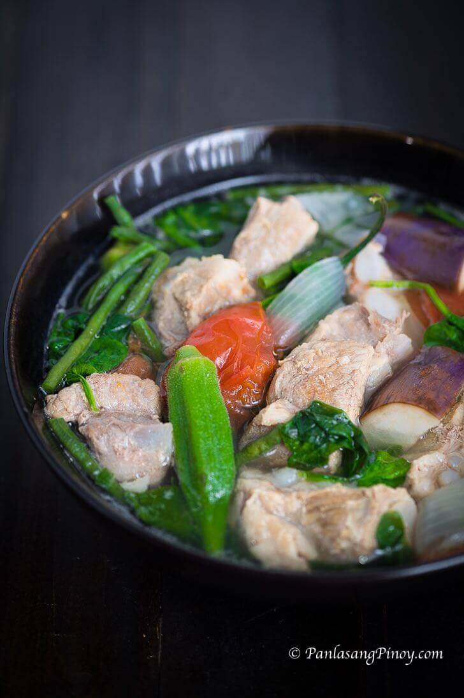

Sinigang

Description
A Filipino soup or stew characterized by its sour and savoury taste. It is most often associated with tamarind (Filipino: sampalok), although it can use other sour fruits and leaves as the souring agent. It is one of the more popular dishes in Filipino cuisine.
Ingredients
- 2 lbs pork belly or buto-buto
- 1 bunch spinach or kang-kong
- 3 tablespoons fish sauce
- 12 pieces string beans sitaw, cut in 2 inch length
- 2 pieces tomato quartered
- 3 pieces chili or banana pepper
- 1 tablespoons cooking oil
- 2 quarts water
- 1 piece onion sliced
- 2 pieces taro gabi, quartered
- 1 pack sinigang mix good for 2 liters water
Steps
- Heat the pot and put-in the cooking oil
- Sauté the onion until its layers separate from each other
- Add the pork belly and cook until outer part turns light brown
- Put-in the fish sauce and mix with the ingredients
- Pour the water and bring to a boil
- Add the taro and tomatoes then simmer for 40 minutes or until pork is tender
- Put-in the sinigang mix and chili
- Add the string beans (and other vegetables if there are any) and simmer for 5 to 8 minutes
- Put-in the spinach, turn off the heat, and cover the pot. Let the spinach cook using the remaining heat in the pot.
- Serve hot. Share and enjoy!